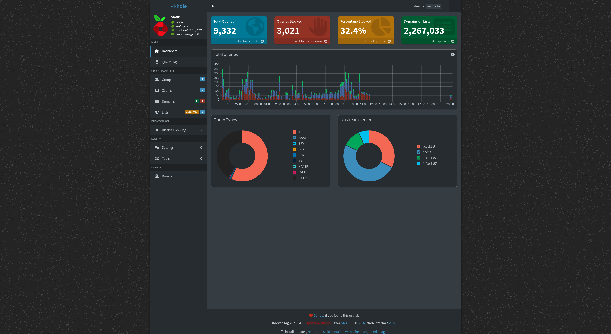
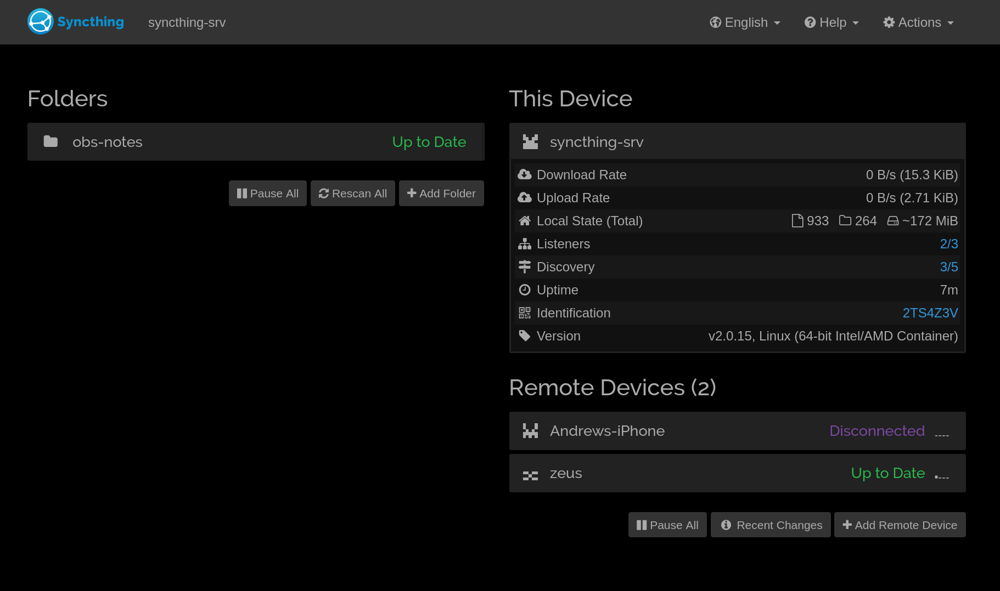
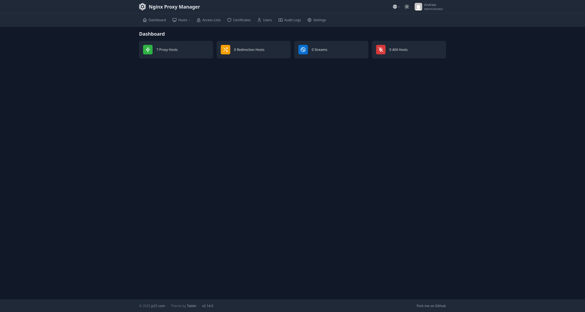
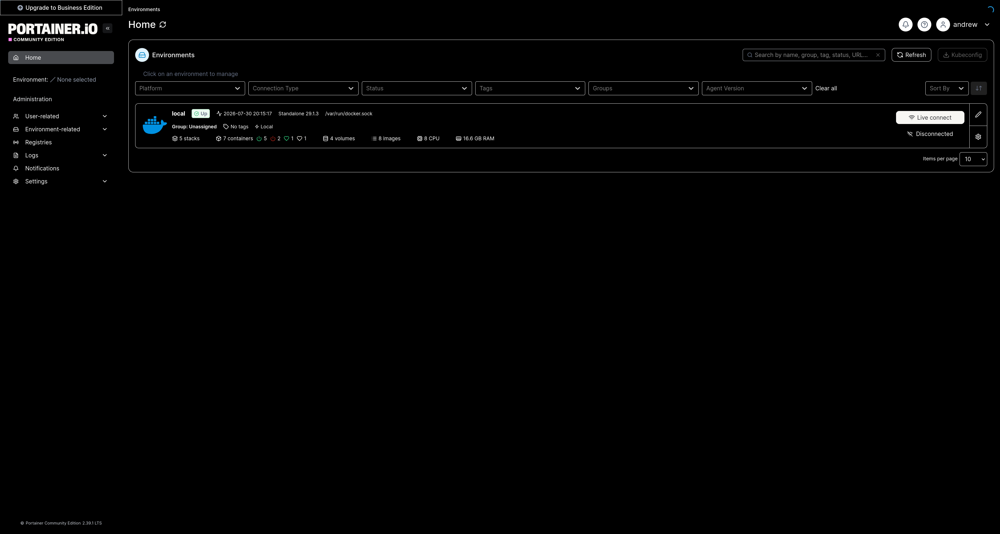

Pi-hole DNS Server
Self-hosted DNS filtering server used for network-wide ad blocking and DNS management.
- Linux server deployment
- DNS configuration
- Network troubleshooting
CS student interested in systems administration, cloud infrastructure, Linux, and DevOps. I enjoy building and maintaining self-hosted services and learning through hands-on projects.

Self-hosted DNS filtering server used for network-wide ad blocking and DNS management.

Private peer-to-peer file synchronization service for managing files across devices.

Configured Nginx to route traffic to internal services using reverse proxy configurations.

Managed containerized applications using Docker and Portainer for easier administration.

Created a centralized dashboard for accessing and managing self-hosted applications.